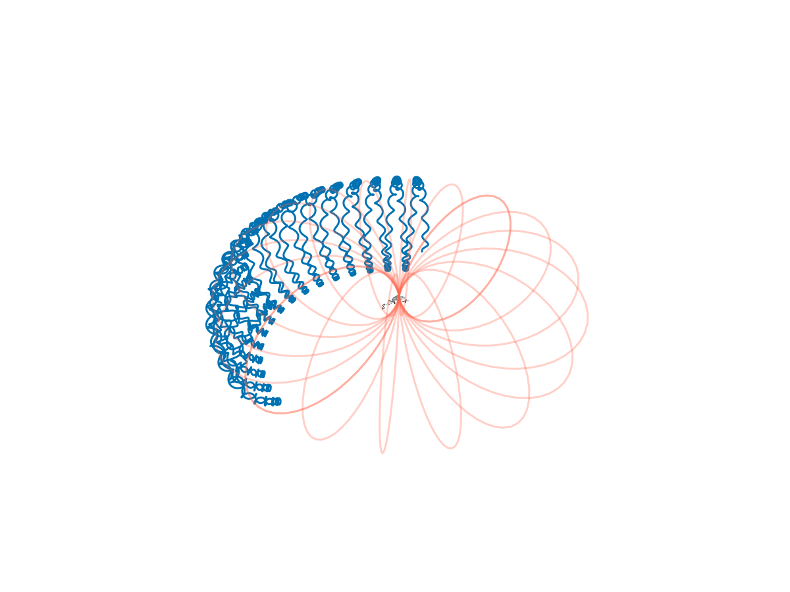

Magnetic dipole


This example shows how to trace protons of a certain energy in a analytic Earth-like magnetic dipole field. There is a combination of grad-B drift, curvature drift, and the bounce motion between mirror points. It demonstrates the motions corresponding to the three adiabatic invariants.
using TestParticle
using TestParticle: getB_dipole, getE_dipole, sph2cart, dipole_fieldline, mᵢ, qᵢ, c, Rₑ
using OrdinaryDiffEq
using CairoMakie
# Initial condition
stateinit = let
# Initial particle energy
Ek = 5e7 # [eV]
# initial velocity, [m/s]
v₀ = sph2cart(c*sqrt(1-1/(1+Ek*qᵢ/(mᵢ*c^2))^2), 0.0, π/4)
# initial position, [m]
r₀ = sph2cart(2.5*Rₑ, 0.0, π/2)
[r₀..., v₀...]
end
# obtain field
param = prepare(getE_dipole, getB_dipole)
tspan = (0.0, 10.0)
prob = ODEProblem(trace!, stateinit, tspan, param)
sol = solve(prob, Vern9())
### Visualization
f = Figure(fontsize=18)
##ax = Axis3(f[1, 1],
# title = "50 MeV Proton trajectory in Earth's dipole field",
# xlabel = "x [Re]",
# ylabel = "y [Re]",
# zlabel = "z [Re]",
# aspect = :data,
# limits = (-2.5, 2.5, -2.5, 2.5, -1, 1)
##)
ax = LScene(f[1,1])
invRE = 1 / Rₑ
l = lines!(ax, sol, idxs=(1, 2, 3))
# In Makie 0.21.11, scene scaling has no effect on Axis3.
scale!(ax.scene, invRE, invRE, invRE)
for ϕ in range(0, stop=2*π, length=10)
lines!(dipole_fieldline(ϕ).*Rₑ..., color=:tomato, alpha=0.3)
end

Solver algorithm matters in terms of energy conservation. In the above we used Verner's “Most Efficient” 9/8 Runge-Kutta method. Let's check other algorithms.
function get_energy_ratio(sol)
vx = @view sol[4,:]
vy = @view sol[5,:]
vz = @view sol[6,:]
Einit = vx[1]^2 + vy[1]^2 + vz[1]^2
Eend = vx[end]^2 + vy[end]^2 + vz[end]^2
(Eend - Einit) / Einit
end
# `ImplicitMidpoint()` requires a fixed time step.
sol = solve(prob, ImplicitMidpoint(); dt=1e-3)
get_energy_ratio(sol)-0.0004598227659852227sol = solve(prob, ImplicitMidpoint(); dt=1e-4)
get_energy_ratio(sol)-4.940132338997509e-9sol = solve(prob, Vern9())
get_energy_ratio(sol)-0.007037561569240269sol = solve(prob, Trapezoid())
get_energy_ratio(sol)-0.05479716411925897sol = solve(prob, Vern6())
get_energy_ratio(sol)-0.06589585876816996sol = solve(prob, Tsit5())
get_energy_ratio(sol)0.5351981201277499Default stepsize settings may not be enough for our problem. By using a smaller abstol and reltol, we can guarantee much better conservation at a higher cost:
# This is roughly equivalent in accuracy and performance with Vern9() and `reltol=1e-3` (default)
sol = solve(prob, Tsit5(); reltol=1e-4);Or, for adaptive time step algorithms like Vern9(), with the help of callbacks, we can enforce a largest time step smaller than 1/10 of the local gyroperiod:
using DiffEqCallbacks
# p = (charge_mass_ratio, E, B)
dtFE(u, p, t) = 2π / (abs(p[1]) * sqrt(sum(x -> x^2, p[3](u, t))))
cb = StepsizeLimiter(dtFE; safety_factor=1 // 10, max_step=true)
sol = solve(prob, Vern9(); callback=cb, dt=0.1) # dt=0.1 is a dummy value
get_energy_ratio(sol)-5.399366721829269e-7This is much more accurate, at the cost of more iterations. In terms of accuracy, this is roughly equivalent to solve(prob, Vern9(); reltol=1e-7); in terms of performance, it is 2x slower (0.04s v.s. 0.02s) and consumes about the same amount of memory 42 MiB. We can also use the classical Boris method implemented within the package:
dt = 1e-4
prob = TraceProblem(stateinit, tspan, param)
sol = TestParticle.solve(prob; dt)[1]
get_energy_ratio(sol)-1.0158504769154868e-15The Boris method requires a fixed time step. It takes about 0.05s and consumes 53 MiB memory. In this specific case, the time step is determined empirically. If we increase the time step to 1e-2 seconds, the trajectory becomes completely off (but the energy is still conserved). Therefore, as a rule of thumb, we should not use the default Tsit5() scheme without decreasing reltol. Use adaptive Vern9() for an unfamiliar field configuration, then switch to more accurate schemes if needed. A more thorough test can be found here.
This page was generated using DemoCards.jl and Literate.jl.